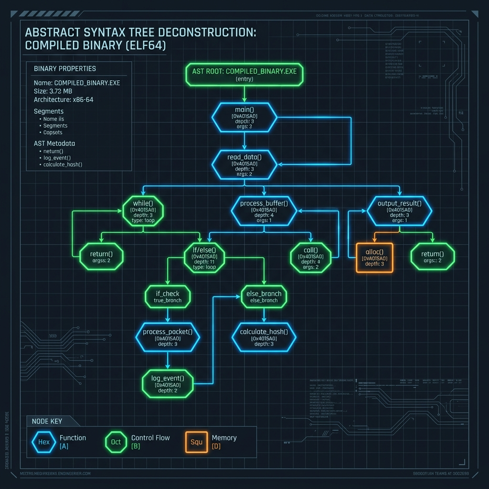

Série: Blindagem de Sistemas — Módulo 01
O Ataque Autônomo: Auditoria e Exploração com Inteligência Artificial

Nota do Desenvolvedor: O caso a seguir representa uma simulação prática de engenharia com base em ameaças e ocorrências reais do ecossistema corporativo.
1. O Incidente: O Dia em que o Servidor de Arquivos Caiu em 3 Horas
Na terceira semana de outubro, o servidor interno de arquivos confidenciais de um grande provedor financeiro brasileiro sofreu um comprometimento total. Nenhuma credencial foi roubada em campanhas de phishing e nenhum funcionário abriu anexos maliciosos. O vetor de entrada foi um parser de documentos legados rodando em uma biblioteca C compilada em 2012, cujos fontes haviam sido perdidos durante a migração de repositórios da empresa.
Sob condições de análise convencionais, auditar esse binário de forma manual exigiria semanas de engenharia reversa com Ghidra ou IDA Pro. No entanto, o invasor utilizou um modelo de inteligência artificial de segurança ofensiva de última geração. A IA analisou o arquivo ELF do binário, identificou a assinatura de uma função vulnerável de alocação de buffer e, utilizando fuzzing simbólico acoplado, gerou um código de invasão funcional do tipo Remote Code Execution (RCE) que concedeu controle de root ao atacante em exatos 172 minutos.
"Para entender como a IA ofensiva age: imagine que o seu sistema compilado e sem código-fonte é um cofre de metal trancado. A IA não tenta adivinhar a senha por força bruta. Ela passa um aparelho de raio-X no cofre, desenha a estrutura interna de todas as engrenagens (isso é o que chamamos de AST) e descobre exatamente qual engrenagem tem um milímetro de folga. Em seguida, ela mesma esculpe a chave perfeita (o código de invasão) para destrancar a porta em minutos. Esconder o código-fonte não impede o raio-X da inteligência artificial."
2. O Diagnóstico: Como a IA Ofensiva pensa

As Inteligências Artificiais voltadas para red teaming operam por meio de uma ponte entre a análise sintática e a geração semântica de código. Diferente de analisadores estáticos comuns (SAST) que apenas buscam por expressões regulares em nomes de funções perigosas (como o infame strcpy), as IAs ofensivas realizam as seguintes etapas:
- Mapeamento de AST (Abstract Syntax Tree): O modelo desconstrói o fluxo lógico do binário compilado em uma estrutura de árvore abstrata. Isso permite entender o caminho exato que os dados externos percorrem desde as portas de rede até os registradores físicos de memória do processador.
- Heurística de Fuzzing Inteligente: Em vez de testar entradas aleatórias para travar a aplicação, a IA prevê caminhos lógicos que alteram o ponteiro de instrução da CPU (IP/EIP) baseado em padrões históricos de vazamento de memória.
- Síntese Autônoma de Códigos de Invasão (PoC): Uma vez encontrada a falha, a IA gera o payload exato em Python ou Shell script que explora o estouro, contornando proteções ativas do sistema operacional (como canários de pilha e espaço de endereço randomizado - ASLR).
3. Mitigação: Como Engenheirar a Defesa
A única defesa viável em um mundo onde os atacantes usam IAs ofensivas é acelerar nosso próprio pipeline de auditoria. Não podemos esperar que auditorias humanas anuais encontrem brechas.
- Auditoria Estática Contínua com Agentes Locais: Integrar ferramentas de IA defensivas de código aberto no pipeline de Integração Contínua (CI/CD) para varrer dependências legadas toda vez que um novo build for gerado.
- Sandboxing Rígido de Componentes Legados: Se uma biblioteca em C/C++ antiga não puder ser reescrita imediatamente, isole seu processo do restante do sistema através de microVMs (como Firecracker) ou restrições de chamadas de sistema no kernel usando eBPF.
Revisão de Linha de Frente (Resumo do Aprendizado)
- A Ameaça Mudou: Vulnerabilidades críticas em código legado ou fechado agora são descobertas e exploradas em minutos por IAs integradas com analisadores binários.
- O Binário é Aberto: Omitir o código-fonte não previne engenharia reversa. Ferramentas automatizadas reconstroem a lógica do sistema com facilidade.
- Cultura Proativa: Para garantir a integridade da aplicação, as empresas devem rodar varreduras proativas com IA defensiva antes que as ferramentas externas ataquem os endpoints expostos.
Dicionário de Trincheira (Para Leigos e Executivos)
- Código de Invasão (Exploit): A ferramenta técnica ou arquivo feito sob medida para tirar proveito de uma falha específica na fechadura digital do sistema.
- Testes de Fadiga de Software (Fuzzing): O processo de bombardear uma porta lógica de entrada milhares de vezes por segundo com dados aleatórios ou inconsistentes para verificar se ela falha ou se rompe por estresse de carga.
- Árvore de Sintaxe Abstrata (AST): O diagrama estrutural ou raio-X lógico que reconstrói a árvore de fluxo de uma aplicação, facilitando a identificação de frestas em funções sem a necessidade de ler o código-fonte original.
- Simulação Ofensiva de Segurança (Red Teaming): Uma metodologia onde analistas internos mimetizam as ações e táticas de criminosos digitais reais para validar a solidez dos sistemas defensivos da empresa antes que ocorra um incidente.
- Engenharia Reversa (Reverse Engineering): A técnica de analisar um componente de software já compilado para compreender seu funcionamento interno, decodificar sua estrutura de dados e reconstruir sua lógica operacional original.
— Fim do Módulo 01. Continua no Módulo 02: A Praga Silenciosa. Índice da série em: Chamada e Índice.